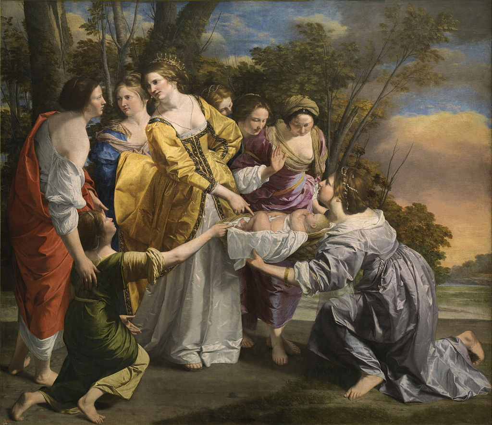

<head>
<meta charset="UTF-8" />
<meta name="keywords" content="drawing, painting" />
<meta name="description" content="drawings by Sunjy" />
<title>Sunjy</title>
<link rel="shortcut icon" type="image/x-icon" href="../../mImages/mCommon/favicon.ico" media="screen" />
<link rel="stylesheet" type="text/css" href="../../mCsses/mCommon/mCssA.css" />
<link rel="stylesheet" type="text/css" href="../../mCsses/mCommon/mCssB.css" />
<link rel="stylesheet" type="text/css" href="../../mCsses/mCommon/mCssC.css" />
<link rel="stylesheet" type="text/css" href="../../mCsses/mCommon/mCssD.css" />
<link rel="stylesheet" type="text/css" href="../../mCsses/mContent/mCssA.css" />
<link rel="stylesheet" type="text/css" href="../../mCsses/mContent/mCssB.css" />
<link rel="stylesheet" type="text/css" href="../../mCsses/mContent/mCssC.css" />
<link rel="stylesheet" type="text/css" href="../../mCsses/mContent/mCssD.css" />
</head>
<script type="text/javascript" src="../../mScripts/mContent/mContentAA.js" /></script>
<script type="text/javascript" src="../../mScripts/mContent/mContentAB.js" /></script>
<script type="text/javascript" src="../../mScripts/mContent/mContentAC.js" /></script>
<script type="text/javascript" src="../../mScripts/mContent/mContentAD.js" /></script>
<script type="text/javascript"></script> 
<script type="text/javascript">
document.write('<div class="mImgAbsolute"></div>');
/*
document.write('<p class="mFontSizeBColor" />From a white paper...</p>');
document.write('<table class="center"><tr><td>');
document.write('');
document.write('</td></tr></table>');
*/
</script>


<script type="text/javascript">
document.write('<p class="mFontSizeBColor" />Moses saved from the Waters</p>');
document.write('<p class="mFontSizeSColor" />“Moses saved from the Waters” by Orazio Gentileschi depicts Moses Rescued from the Nile. Gentileschi painted this work in London at the age of seventy years old.  It was conceived for King Philip IV of Spain as a gift in 1633.<br><br>It is designed as a homage to Veronese’s festive scenes. All of the female figures are wearing silk, satin, and cotton clothing, accentuating the luxury of the garments and jewels. The princess is wearing a golden-yellow dress; it’s edging embroidered with pearls and gems. Her head is adorned with a tiara painted in extraordinary detail. The idealized landscape is dominated by orange dawn on the horizon. There is only a small glimpse of the Nile in the background.<br><br>The Biblical account of the story is described in the Book of Exodus, which recounts how, during the captivity in Egypt of the Israelite people, the Pharaoh ordered:<br><br>“Every Hebrew boy that is born, you must throw into the Nile, but let every girl live.” <br><br>When Moses’ mother had a male child, she hid him for three months. But when she could protect him no longer, she got a papyrus basket for him and coated it with tar and pitch. Then she placed the child in it and put it among the reeds along the bank of the Nile. His sister, Miriam, stood at a distance to see what would happen to him.<br><br>Then Pharaoh’s daughter went down to the Nile to bathe, and her attendants were walking along the riverbank. She saw the basket among the reeds and sent her female slave to retrieve it. She opened it and saw the baby. He was crying, and she felt sorry for him. “This is one of the Hebrew babies,” she said. Then his sister asked Pharaoh’s daughter, “Shall I go and get one of the Hebrew women to nurse the baby for you?”<br><br>“Yes, go,” she answered. So the girl went and got the baby’s mother. Pharaoh’s daughter said to her, “Take this baby and nurse him for me, and I will pay you.” So the woman took the baby and nursed him. When the child grew older, she took him to Pharaoh’s daughter, and he became her son. She named him Moses, saying, “I drew him out of the water.”<br></p>');
document.write('<table class="center" /><tr><td>');
document.write('<br>It is designed as a homage to Veronese’s festive scenes. All of the female figures are wearing silk, satin, and cotton clothing, accentuating the luxury of the garments and jewels. The princess is wearing a golden-yellow dress; it’s edging embroidered with pearls and gems. Her head is adorned with a tiara painted in extraordinary detail. The idealized landscape is dominated by orange dawn on the horizon. There is only a small glimpse of the Nile in the background.<br><br>The Biblical account of the story is described in the Book of Exodus, which recounts how, during the captivity in Egypt of the Israelite people, the Pharaoh ordered:<br><br>“Every Hebrew boy that is born, you must throw into the Nile, but let every girl live.” <br><br>When Moses’ mother had a male child, she hid him for three months. But when she could protect him no longer, she got a papyrus basket for him and coated it with tar and pitch. Then she placed the child in it and put it among the reeds along the bank of the Nile. His sister, Miriam, stood at a distance to see what would happen to him.<br><br>Then Pharaoh’s daughter went down to the Nile to bathe, and her attendants were walking along the riverbank. She saw the basket among the reeds and sent her female slave to retrieve it. She opened it and saw the baby. He was crying, and she felt sorry for him. “This is one of the Hebrew babies,” she said. Then his sister asked Pharaoh’s daughter, “Shall I go and get one of the Hebrew women to nurse the baby for you?”<br><br>“Yes, go,” she answered. So the girl went and got the baby’s mother. Pharaoh’s daughter said to her, “Take this baby and nurse him for me, and I will pay you.” So the woman took the baby and nursed him. When the child grew older, she took him to Pharaoh’s daughter, and he became her son. She named him Moses, saying, “I drew him out of the water.”<br>" />');
document.write('</td></tr></table>');
</script>


